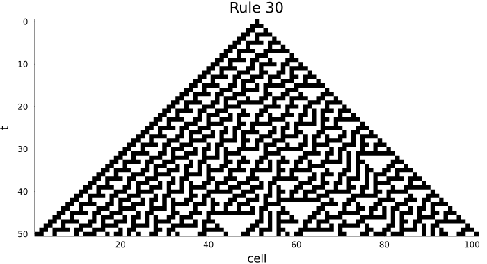
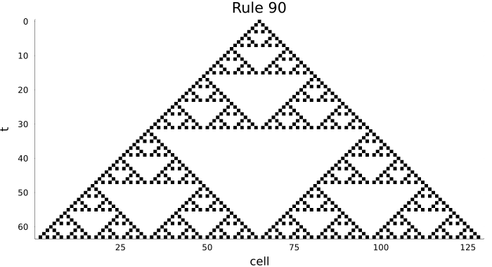
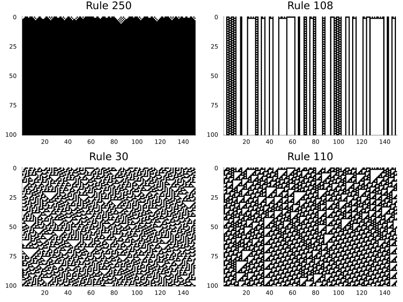
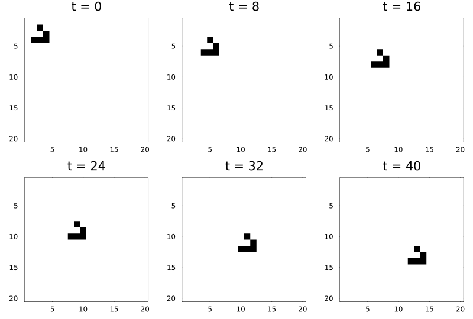
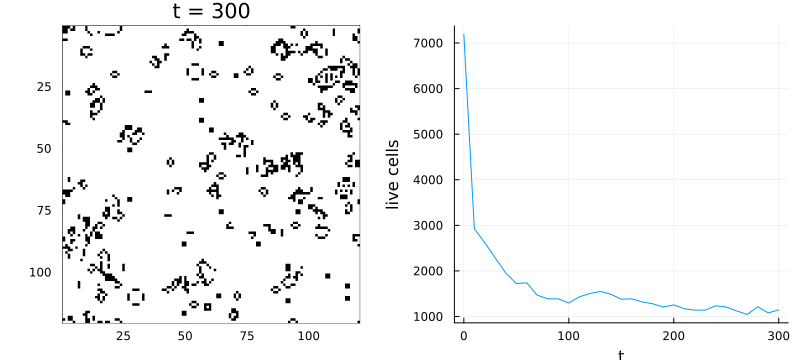

Getting started
Simon Frost
- Overview
- A first automaton: rule 30
- Other elementary rules
- Saving less, stepping by hand
- Two dimensions: the Game of Life
- Where next
- References
Overview
A cellular automaton is a grid of cells, each in one of a few states, updated in discrete time steps. At every step each cell looks at its own state and the states of its neighbours and applies the same local rule to decide its next state (Ceccherini-Silberstein and Coornaert 2010). Simple rules can produce strikingly complex behaviour.
In CellularAutomataCore.jl a simulation has four ingredients:
| ingredient | example |
|---|---|
| a rule | Wolfram(30), Life(), or any function |
| an initial state | an array, e.g. single_seed(101) |
| a time span | a number of steps, e.g. 50 |
| a space (optional) | a ring or torus the size of the state, by default |
They are bundled into a CAProblem and run with solve.
ENV["GKSwstype"] = "100" # headless plotting
using CellularAutomataCore
using Plots
using RandomA first automaton: rule 30
Elementary cellular automata live on a line of cells with two states, 0 and 1. Each cell’s next state depends on itself and its left and right neighbours. There are $2^3 = 8$ possible neighbourhoods, so a rule is a table of 8 bits; Wolfram’s numbering reads that table as a binary number. Rule 30 is the table 00011110.
u0 = single_seed(101) # 101 cells, all 0 except the centre
prob = CAProblem(Wolfram(30), u0, 50)
sol = solve(prob)CASolution with 51 saved states at t = 0:…:50, retcode Success (Wolfram(30))sol.u holds the saved states and sol.t their times. By default every step is saved, so there are 51 states, from t = 0 to t = 50.
length(sol.u), sol.t[1], sol.t[end](51, 0, 50)Plotting a one-dimensional solution draws a space-time diagram: one row per time step, time running downwards.
plot(sol; c=:binary, colorbar=false, size=(700, 380), title="Rule 30")
The same data as a single array, with time as the last axis:
size(trajectory(sol))(101, 51)Other elementary rules
Rule 90 makes each cell the exclusive-or of its two neighbours. From a single seed it draws Pascal’s triangle modulo 2, the Sierpiński gasket:
plot(solve(CAProblem(Wolfram(90), single_seed(129), 63));
c=:binary, colorbar=false, size=(700, 380), title="Rule 90")
Wolfram sorted elementary rules into four classes by their behaviour from random initial states: uniform, periodic, chaotic and complex. Here is one rule from each, on a ring of 150 cells started from the same random state:
u = Int8.(rand(Xoshiro(1), 0:1, 150))
panels = map([250, 108, 30, 110]) do code
plot(solve(CAProblem(Wolfram(code), u, 100));
c=:binary, colorbar=false, title="Rule $code", xlabel="", ylabel="")
end
plot(panels...; layout=(2, 2), size=(800, 600))
Saving less, stepping by hand
Long runs need not keep every state. saveat saves every k steps (or at the listed times); the first and last states are always kept.
sol = solve(CAProblem(Wolfram(110), u, 1000); saveat=250)
sol.t5-element Vector{Int64}:
0
250
500
750
1000For full control, init returns an integrator that advances with step!:
integ = init(CAProblem(Wolfram(30), single_seed(31), 100); saveat=1000)
step!(integ, 10)
integ.t, sum(integ.u)(10, 11)Two dimensions: the Game of Life
Conway’s Game of Life is a two-state rule on a square grid. A dead cell with exactly three live neighbours (out of its eight) is born; a live cell with two or three live neighbours survives; every other cell dies or stays dead. It is written B3/S23, for “born with 3, survives with 2 or 3”.
A glider is a five-cell pattern that moves one cell diagonally every four steps. Patterns are often shared in run-length-encoded (RLE) form:
glider, _ = parse_rle(raw"""
x = 3, y = 3, rule = B3/S23
bo$2bo$3o!
""")
glider3×3 Matrix{Int8}:
0 1 0
0 0 1
1 1 1place! copies the pattern into an empty 20 × 20 board. The default space is a torus, so the glider re-enters on the far side when it leaves the board.
u0 = place!(zeros(Int8, 20, 20), glider, (2, 2))
sol = solve(CAProblem(Life(), u0, 40); saveat=8)
plot([plot(sol; snapshot=i, c=:binary, colorbar=false) for i in 1:6]...;
layout=(2, 3), size=(800, 540))
After 40 steps the glider has moved 10 cells down and 10 to the right:
final_state(sol) == circshift(u0, (10, 10))trueFrom a random initial state Life settles into a mixture of still lifes, oscillators and gliders:
soup = Int8.(rand(Xoshiro(42), 0:1, 120, 120))
sol = solve(CAProblem(Life(), soup, 300); saveat=10)
alive = [count(==(1), u) for u in sol.u]
plot(plot(sol; c=:binary, colorbar=false),
plot(sol.t, alive; xlabel="t", ylabel="live cells", legend=false);
layout=(1, 2), size=(800, 360))
Where next
- Rule families: Wolfram codes with more states and wider neighbourhoods, totalistic rules, Life-like and Generations rules, and reading and writing patterns.
- Spaces and neighbourhoods: edges, hexagonal grids, three dimensions and graphs.
- Custom local rules: writing your own rules, with any kind of state and with random numbers.
References
Ceccherini-Silberstein, Tullio, and Michel Coornaert. 2010. Cellular Automata and Groups. Springer Monographs in Mathematics. Springer. https://doi.org/10.1007/978-3-642-14034-1.